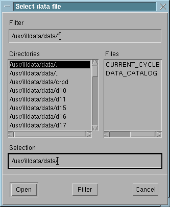
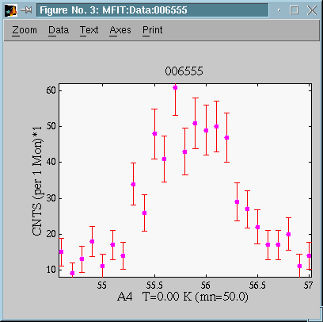

Version 4.2. (1999)

Fig 1 : Mfit : control window
The functions that appear on the menu are those that Mfit read from the mfit.ini file when it started. Choose a load function from the menu by clicking on it. If you choose 'Other...' you can choose a load function that is not one of those listed in the .ini file. Mfit shows the currently selected load function in the control window.
Some load routines :
Usually, load routines are available as Graphic User Interface
(GUI, asks user preferences) and Automatic (tries to guess, usefull
for batch runs) modes
You can define your own load routines for special data formats.

Fig 2 : Mfit : selecting a file to load.
Choose a file, changing directories if necessary. Mfit will attempt to load the selected file using the current load function. When using a Graphic User Interface (GUI) routine, the load routine might ask for additional informations about how to import the data. Often, the column selector will appear.

Click OK button. If successful, a data window, containing a graph of your data will be opened. Get the example ILL data file here. It looks something like this:

Fig 4 : Mfit : the data window (with ILL data GUI load).
If the data file you want to load is in the current data directory (i.e.
the same directory as the last data file loaded), you can just edit the
name in the data file box in the control window, right next to the 'Data
File' indication in the MFit Control window.
You may click on any text to edit it, zoom, select/deselect points
with the left button. The middle button in the graph will indicate the
point coordinates. You may also manipulate your
data ('Change X-axis' and 'Transform' items of the 'MFit : Graph/Axes'
menu). If you encounter some problems in viewing your data, you can still
close the data window (MFit : Graph : Data menu/Close), and reload it (MFit
: Control : File menu). You can also change the color mode with the matlab
command 'colordef'.
Next: Choosing fitting functions.
See also: Options when loading data
files,
Mfit batch files
, The
mfit.ini file , Manipulating
data ,
How to write load functions.